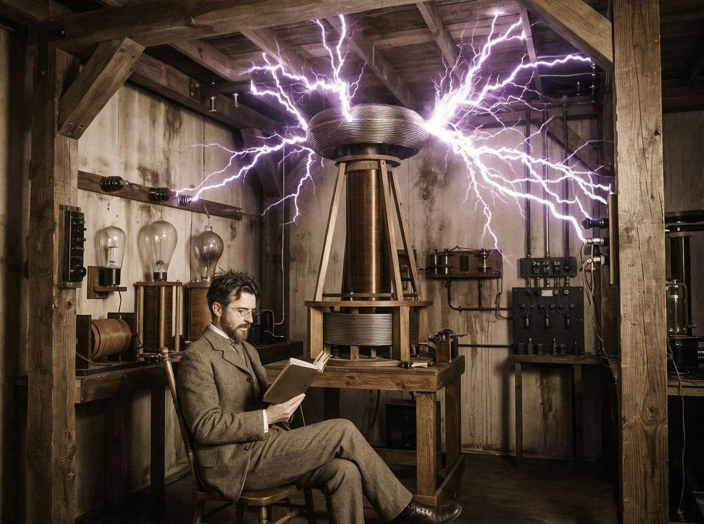
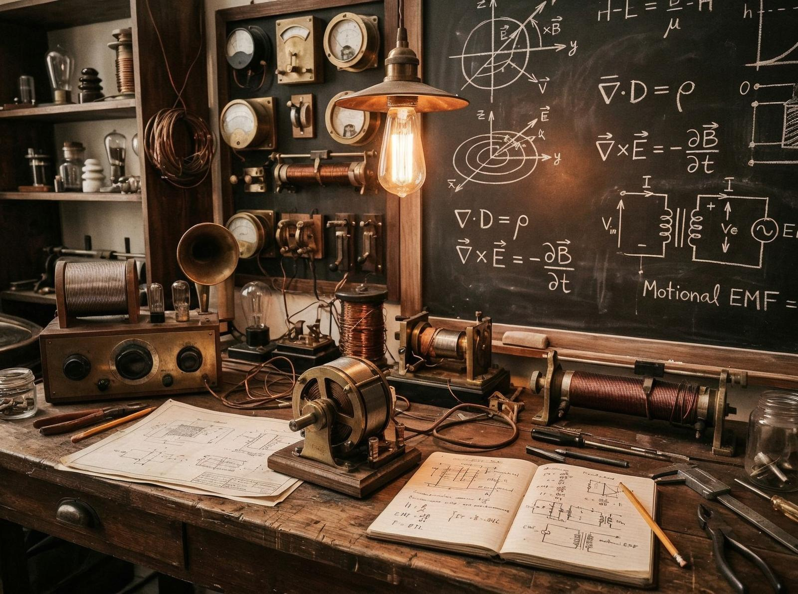

În 1884, un tânăr inventator sârb a ajuns în America. Nu avea bani, nu avea conexiuni, nu știa engleza perfect. Însă avea viziuni, idei, invenții care urmau să schimbe lumea. Se numea Nikola Tesla.
Tensiunea centrală a vieții lui a fost lupta între genialitate și uitare. A creat curentul alternativ, care a luminat casele, a alimentat industriile, a alimentat lumea modernă. Dar nu a fost recunoscut. Edison a primit meritul. Westinghouse a primit profitul.
Tesla a avut viziuni pe care nimeni nu le-a înțeles. A imaginat energie wireless, comunicare wireless, internet înainte să existe. A imaginat o lume în care energia e liberă, în care oricine poate să o folosească, în care nu e profit, doar progres.

Dar viziunile costau bani. A investit totul în invenții care nu au reușit. A pierdut bani, conexiuni, speranțe.
Contrastul care spune totul: Tesla a murit într-o cameră de hotel, la 86 de ani, singur, sărac. Invențiile sale erau pretutindeni — în case, în fabrici, în orașe — dar el era uitat.
A murit cu viziuni încă în cap, cu invenții încă în minte, cu o lume încă în imaginație. Nimeni nu l-a înțeles. Nimeni nu l-a apreciat. Nimeni nu l-a recunoscut.

Mostenirea lui? Geniul, viziunea, tragedia. Un om care a creat ceva fundamental, dar care a fost lăsat în umbră. Un om care a demonstrat că viziunea nu e suficientă, că lumea vrea profit, că genialitatea nu garantează succesul.
Nikola Tesla nu a fost doar un inventator, a fost un visător care a demonstrat că ideile sunt mai importante decât banii, că viziunea e mai importantă decât profitul, că geniul nu e întotdeauna recunoscut. A demonstrat că invențiile pot schimba lumea, chiar dacă inventatorul e uitat.